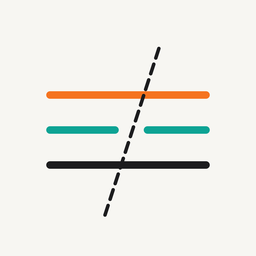

Slash - One Line Cut · 슬래시
One stroke. Every line cut, in the right order.
손을 떼지 않는 한 획으로 팽팽한 줄을 순서대로 끊어요.
- Draw one stroke — the blade flies along it and slices taut lines / 한 획을 그으면 칼날이 그 길을 따라 날아가요
- Black lines anytime, colored lines in order, never touch grey dotted lines / 검은 줄은 아무 때나, 색 줄은 순서대로, 회색 점선은 금지
- Endless levels that are always solvable, with a new rule every 10 levels / 끝없는 판, 10판마다 새 규칙
- Hit-stop, shards and rising notes with every cut / 끊을 때마다 히트스톱·파편·올라가는 음
iPhone · Support 고객 지원 · Privacy 개인정보 처리방침
© 2026 Seo DaeGyu